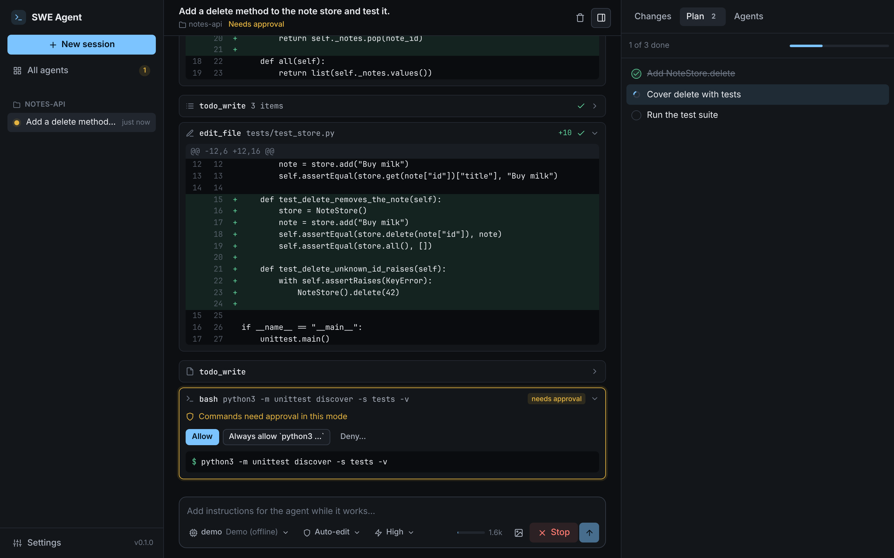
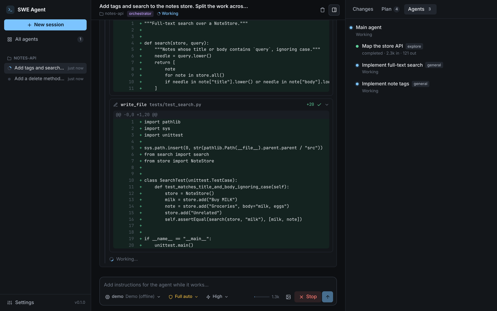
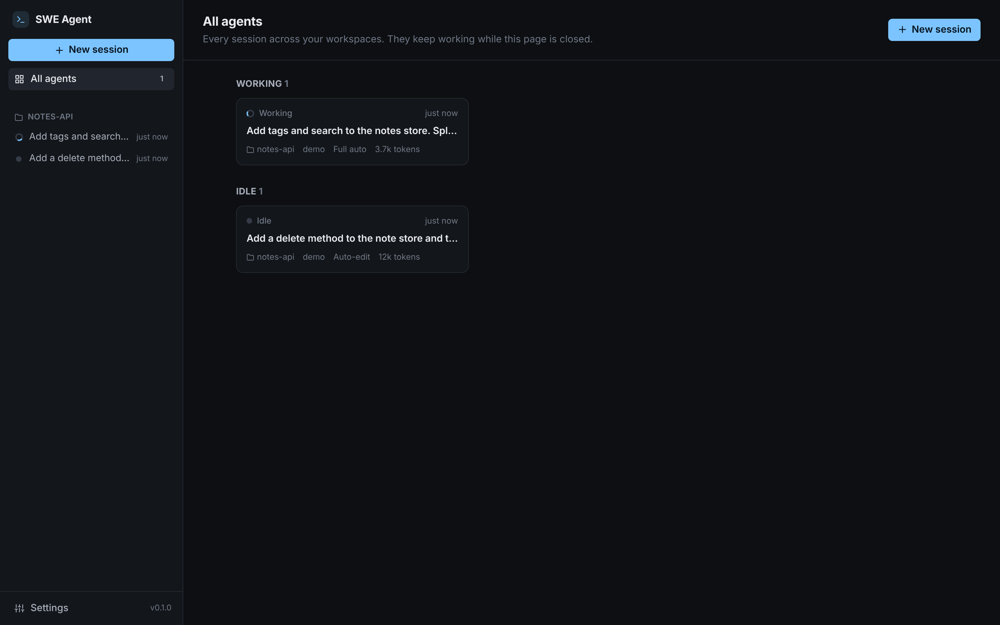

SWE Agent is an autonomous software engineer for your own machine. It reads the code, plans, edits, runs and verifies, alone or as an orchestrator leading parallel sub-agents, on whichever model you choose.
git clone https://github.com/Cosmic-Game-studios/SWE_Agent
No API key yet? The offline demo model shows the whole loop without one.
Recorded from the real app, one minute, uncut. The agent loop, tools, approvals, sub-agents, git worktrees and the merge are real; the model's turns are scripted by the built-in offline demo model, so the recording needs no API key.
Not autocomplete and not a chat window. An agent with real tools, a plan, and the persistence to keep going until the work builds and the tests pass.
Native adapters for the Anthropic, OpenAI and Gemini APIs and for OpenRouter, plus every OpenAI-compatible endpoint. Model lists come live from the provider. Switch models in the middle of a session.
A lead agent plans, hands independent pieces to sub-agents that run in parallel, each in its own git worktree, then merges, runs the full suite and has a reviewer check the result.
Sessions run in the server, not in your browser tab. Close the UI and come back hours later. When the context fills up, the history is compacted into a hand-over summary and the work continues.
Four modes from read-only planning to full autonomy. Edits and commands wait for approval when you want them to, with "always allow" rules per command, path or host.
Read, write and edit files, search with glob and regex, run commands in the foreground or keep servers running in the background, fetch documentation, and plug in anything else through MCP.
Bring your own API key; it stays on your computer and goes to nobody but the provider. Prefer the login of your installed
claude or codex tool? Run a session on that instead.
Every action is visible as it happens: the plan, each file diff, each command and its output.

The orchestrator keeps its own context for decisions and lets workers do the reading, typing and testing.

Run several sessions across several projects and see at a glance which one is working and which one needs you.
swe run "fix the failing tests"
Memory safety and predictable performance where it matters: one static binary runs the agent loop, the tools, the server and the embedded UI. No runtime to install, no daemon to manage.
Histories are never rewritten between compactions, so provider prompt caches stay warm and reasoning stays valid across tool calls.
Thinking blocks, encrypted reasoning items and thought signatures are stored raw and replayed exactly to the API that produced them.
Each session is an append-only event log. Clients replay from the last sequence number they saw; nothing is lost on reconnect.
The server listens on loopback only and rejects foreign hosts and origins. Any other interface requires an access token.
You need Rust, Node.js and an API key from any supported provider. No key at hand? Demo mode shows how everything works, offline.
You need Rust 1.88 or newer, Node.js 22 or newer and git. The web UI is built first because it is embedded into the binary.
Clone into a short folder such as C:\src: the MSVC linker stops once build paths pass 260 characters.
$ git clone https://github.com/Cosmic-Game-studios/SWE_Agent && cd SWE_Agent $ npm --prefix ui ci && npm --prefix ui run build $ cargo build --release # the binary is target/release/swe; put it on your PATH
> git clone https://github.com/Cosmic-Game-studios/SWE_Agent; cd SWE_Agent > npm --prefix ui ci; npm --prefix ui run build > cargo build --release # the binary is target\release\swe.exe; put it on your PATH
Set a key for the provider you use and run swe in the folder the agent should work on. It serves the UI on
127.0.0.1:4477 and opens your browser. Keys can also be entered in the UI under Settings.
# or OPENAI_API_KEY, GEMINI_API_KEY, OPENROUTER_API_KEY $ export ANTHROPIC_API_KEY=... $ cd ~/my-project && swe
# or OPENAI_API_KEY, GEMINI_API_KEY, OPENROUTER_API_KEY > $env:ANTHROPIC_API_KEY = "..." > cd C:\src\my-project; swe
Demo mode adds an offline, scripted model. It does no real work, but it shows the loop, the tools, the approvals and the UI exactly as they behave with a real model.
$ SWE_AGENT_DEMO=1 swe
> $env:SWE_AGENT_DEMO = "1"; swe
The same agent runs headless for scripts and CI, and prints what it does. Add --json for machine-readable events.
$ swe run --provider anthropic --model claude-opus-5-5 --mode auto-edit "fix the failing tests"
Not to look around: the offline demo model needs none. For real work, use a key from Anthropic, OpenAI, Google or
OpenRouter, or point it at any OpenAI-compatible endpoint. Local models served by Ollama or LM Studio need no key at all. A
session can also run on the claude or codex command line tool you already have installed; whether
your plan covers that is defined by the vendor's terms.
What the permission mode allows. plan blocks edits, ask asks before every edit and command,
auto-edit edits inside the workspace and asks before commands, and full-auto does not ask. There is
no operating-system sandbox yet, so full-auto acts with your user's permissions: use it in a container or on
work you can throw away.
Keys are stored in ~/.swe-agent/credentials.json and are sent only to the provider they belong to. A key from
the environment is never written to disk. Your code goes to the model provider you choose and nowhere else. The server
listens on loopback only and rejects requests with a foreign Host or Origin.
Yes. An agent can delegate to sub-agents that run in parallel, each in its own git worktree and on its own branch, so their edits cannot collide. Sessions live in the server: they keep working when you close the tab and survive a restart, and one board shows every agent across your projects.
It is an early release. The provider adapters have been validated against the live API of every built-in provider with real keys, and the agent loop, tools, sessions and UI are tested end to end with a scripted model. Benchmark results have not been published yet, and there is no operating-system sandbox. Treat it as a capable preview.
The goal is an agent you can hand real engineering work to and trust with the result. This is the order we plan to get there.
In the repository today.
Prove it on real work and make it safe to leave alone.
More of what an engineer actually does.
From a personal tool to shared infrastructure.
Version 0.1 is an early release. The provider adapters have been validated against the live API of every built-in provider with real keys, and are tested against local servers that replay each provider's wire format. The agent loop, tools, sessions and UI are covered end to end with the scripted demo model. Benchmark numbers are the next item on the roadmap and have not been published yet. Treat it as a capable preview, not a finished product.
Give it a task you would hand to a colleague, and watch every step it takes.